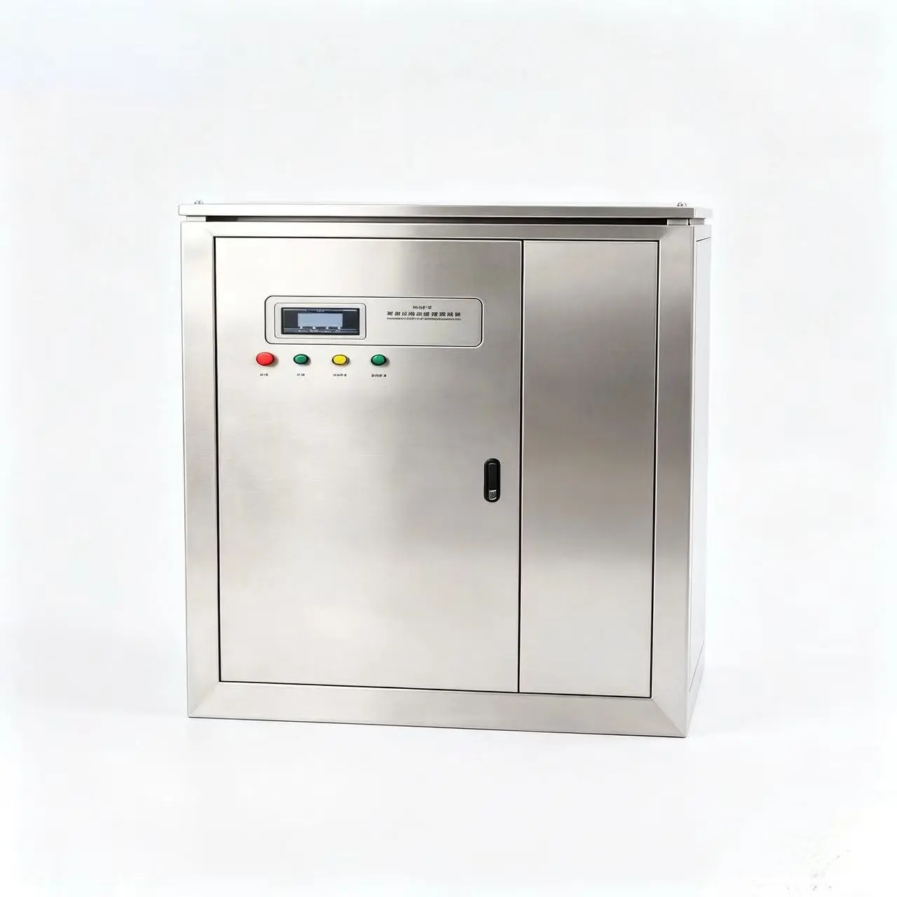
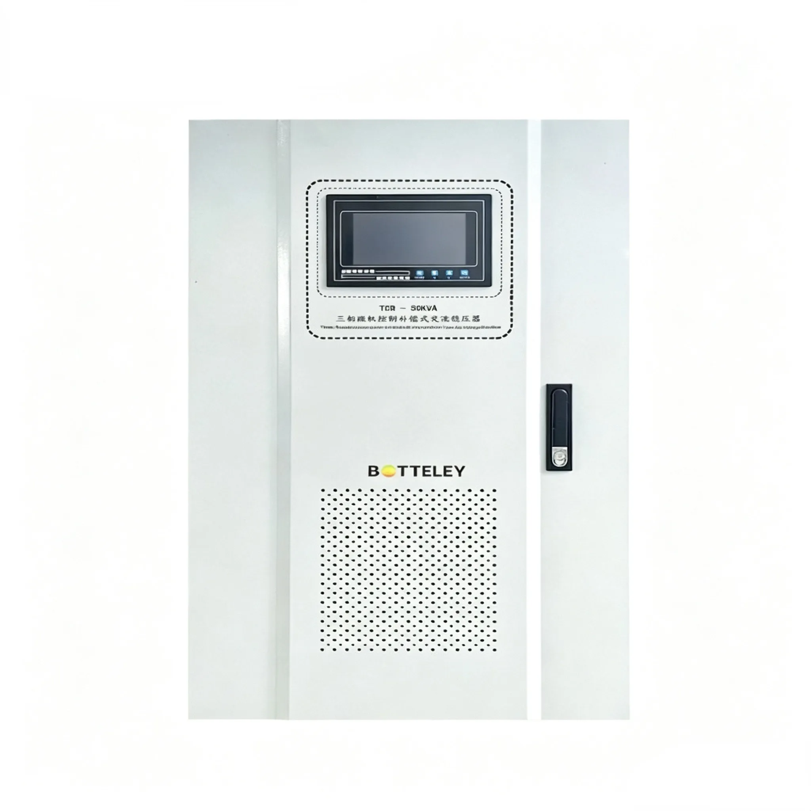
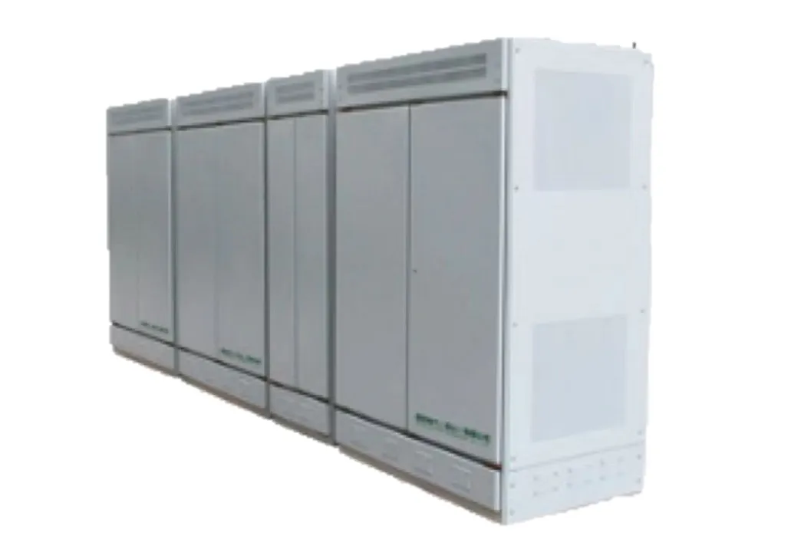
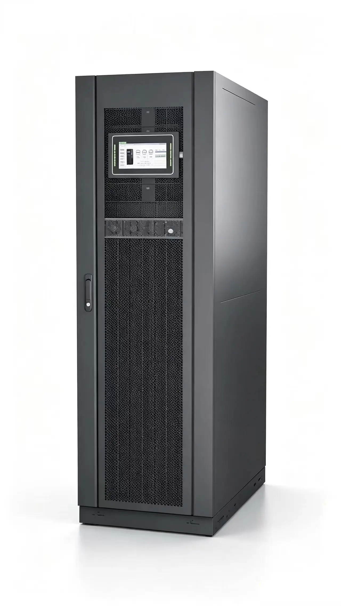
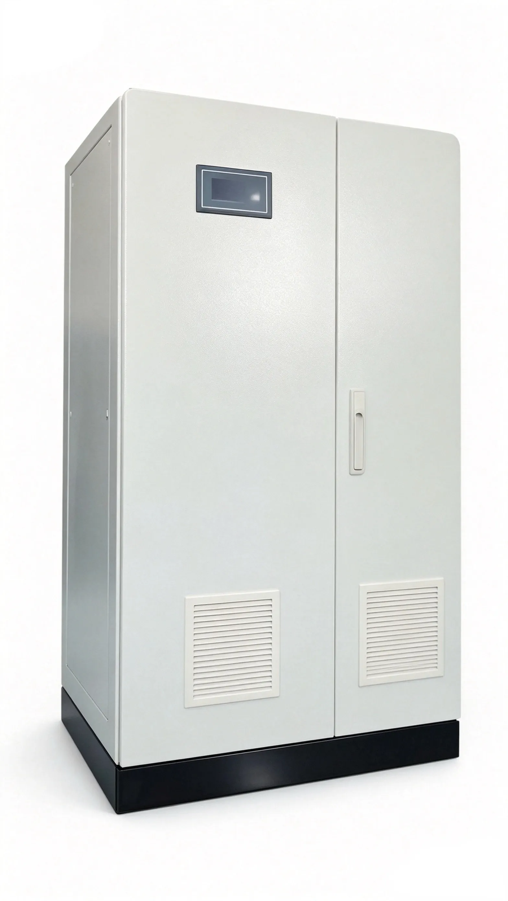
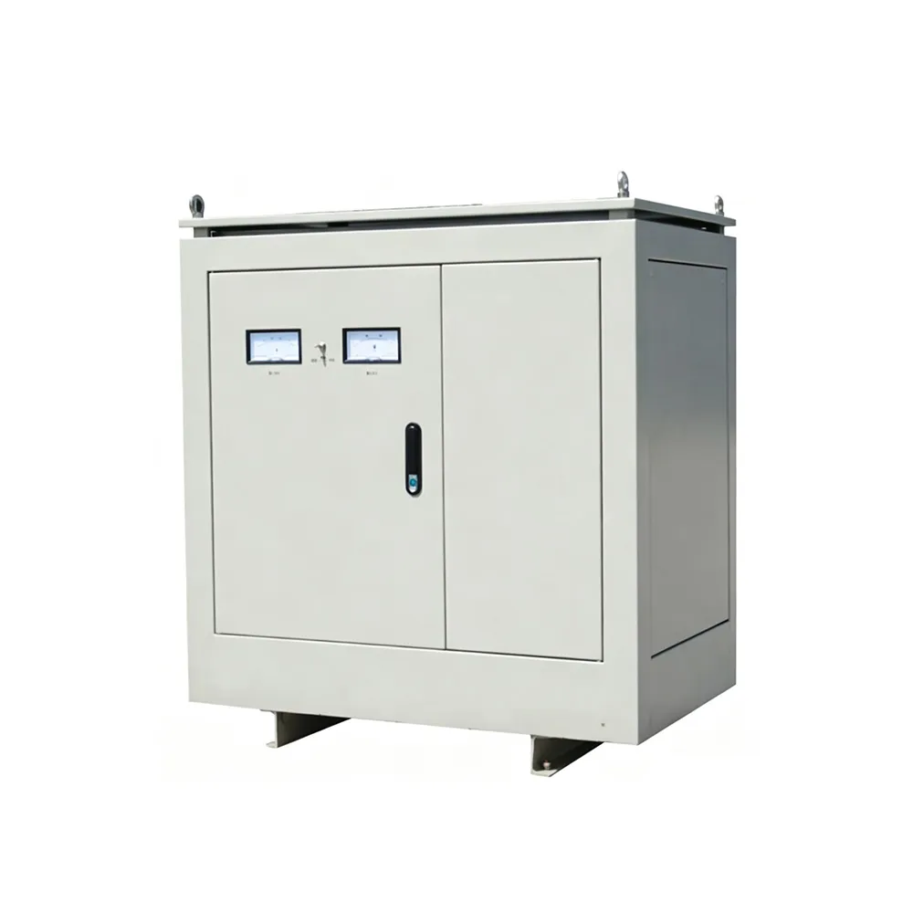
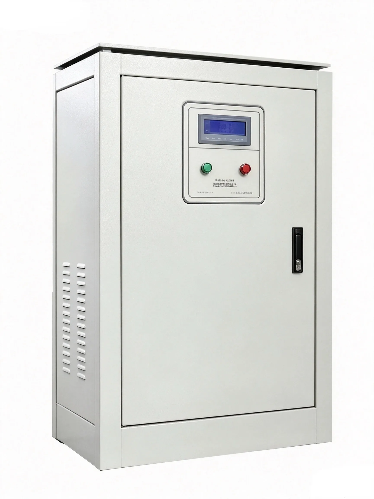
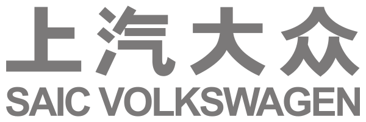

Application-first
Grid and load reviewed together.
From equipment requirements to engineered cabinets, Botley brings together power system design, production coordination and technical support for global projects.


Stable, compatible power for imported equipment.
View solution →
Protect synchronized drives from grid fluctuation.
View solution →
Control distortion, sag and changing demand.
View solution →
Conditioned power with continuity protection.
View solution →
Reproduce voltage and frequency conditions.
View solution →

Workshop scenes are visual placeholders, not photographs of Botley facilities.
Founded in 2015, Botley brings together product development, production coordination and technical service for industrial power protection. Our headquarters is in Shanghai, with an R&D and production base in Zhenjiang, Jiangsu.
Grid and load reviewed together.
Regulate, convert, back up and filter.
Adapt electrical and cabinet design.
Service beyond delivery.
Adapt a proven platform to your electrical, mechanical and brand requirements.

Stabilization and transformation in one coordinated cabinet.
Review configuration →Defined voltage and frequency for destination-grid simulation.
Review configuration →
Control unstable voltage.
Match the required grid.
Preserve critical continuity.
Reduce power distortion.
Product images are sourced from Botley's existing product catalog; actual configurations may vary by project.
Printing · CNC · Steel · Shipbuilding · Automotive · Telecom · Medical · Aerospace

SAIC Volkswagen Philips
PhilipsNames are references listed in Botley's company profile. Trademarks belong to their respective owners; inclusion does not imply endorsement. Heidelberg logo artwork is licensed under CC BY-SA 4.0.
View industries and references →